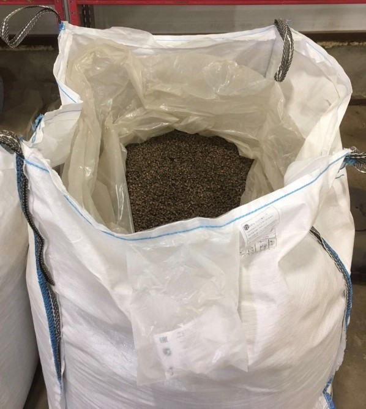
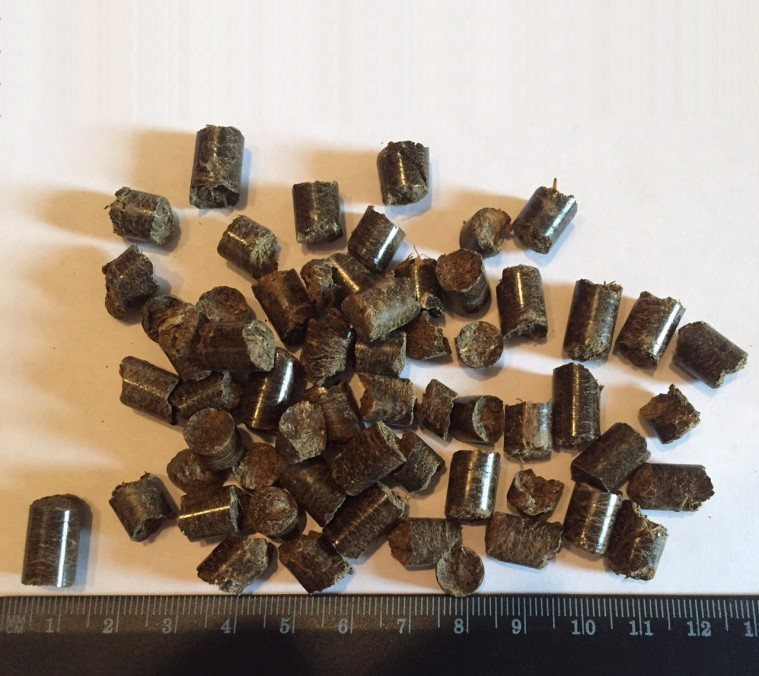
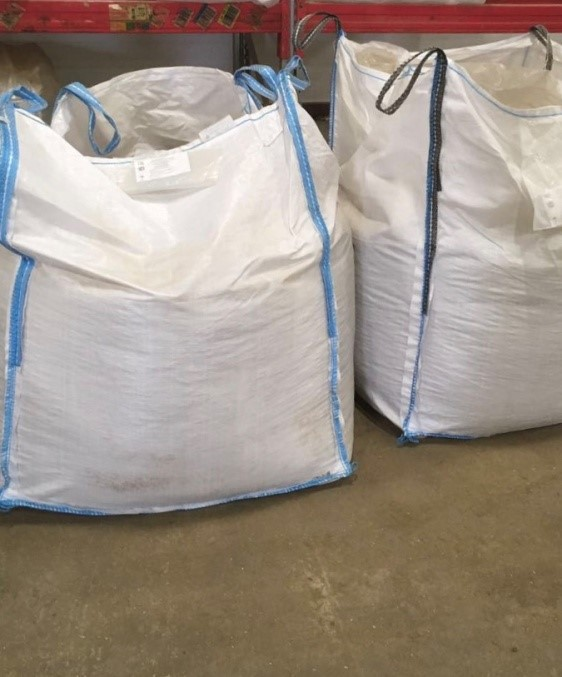

ОМУ (Органоминеральные удобрения)
-
Комплект — «Органика +Азот» + восстановление плодородия, эффективнее и безопаснее (аналогичен по действию аммиачной селитре) Фасовка 1000 кг.
- Использование восстанавливает почвенное плодородие (круговорот органического вещества в агроценозе)!!!
- Производится по собственной запатентованной технологии;
- Не влияют на свойства почвы, например, на кислотность, степень засоленности;
- Используется на 90%, тогда как обычная аммиачная селитра на 30-40%, в виду чего не требуется состав действующего вещества (N) аналогичного селитре при сохранении эффективности;
- Доза внесения аналогична аммиачной селитре;
- Участвует в восстановлении почвенного плодородия;
- Гранулы 2-4 мм вносятся всеми типами разбрасывателей минеральных удобрений;
Основные Органическое вещество, % 75-85 Азот (N), % 12-16 Фосфор (Р2О 5), % 0,4-3,1 Калий (К2О), % 0,3-2,1 Действующие вещества Сера (S), железо (Fe), марганец (Mn), медь (Cu), цинк (Zn), бор (B) -
Комплексное удобрение (ОМУ) 12*12*12 + восстановление плодородия (аналогичен по действию АЗОФОСКА 16*16*16) Фасовка 1000 кг.
- Использование восстанавливает почвенное плодородие(круговорот органического вещества в агроценозе)!!!
- Производится по собственной запатентованной технологии;
- Доза аналогична азофоска (Нитроаммофоска) 16*16*16;
- Постоянный контроль качества производимой продукции (Продукт имеет всегда одинаковый состав и насыпную плотность);
- Каждая партия проходит ветеринарный контроль;
- Вся Продукция реализуется через систему "Меркурий" Россельхознадзора;
- Обеспечивает восстановление почвенного плодородия;
- Гранулы 2-4 мм вносятся всеми типами разбрасывателей минеральных удобрений.
Основные Органическое вещество, % 75-85 Азот (N), % 12-16 Фосфор (Р2О 5), % 12-16 Калий (К2О), % 12-16 Действующие вещества Сера (S), железо (Fe), марганец (Mn), медь (Cu), цинк (Zn), бор (B) -
Комплексное удобрение (ОМУ) с (NPk 7*18*18) + восстановление плодородия (аналогичен по действию ДИАММОФОСКА с NPk 10*26*26) Фасовка 1000 кг.
- Производится по собственной запатентованной технологии;
- Свободно от патогенной микрофлоры (гельминтов, сальмонелы) и семян сорных растений;
- Постоянный контроль качества производимой продукции (Продукт имеет всегда одинаковый состав и насыпную плотность);
- Каждая партия проходит ветеринарный контроль;
- Вся Продукция реализуется через систему "Меркурий" Россельхознадзора;
- Обеспечивает восстановление почвенного плодородия (правильная циркуляция органического вещества в агроценозе);
- Гранулы 4-6 мм вносятся всеми типами разбрасывателей минеральных удобрений
Основные Внешний вид Гранулы коричневого цвета Влажность, % не более 2 Сухое вещество, % не менее 98 Содержание в сухом веществе Зола, % не более 25 Органическое вещество, % не менее 75 Углерод С, % не менее 40 Азот, % не более 7 Фосфор (Р2О5), % не более 18 Калий (К2О), % не более 18 Гранулометрический состав Гранулы размером 4-6 мм, % не менее 95 Гранулы размером 1-4 мм, % не более 5 Рассыпчатость, % не менее 100 Действующие вещества Сера (S), железо (Fe), марганец (Mn), медь (Cu), цинк (Zn), бор (B) -
Комплексное удобрение (ОМУ) с (NPk 12*32) + восстановление плодородия (аналогичен по действию АММОФОС 12*52) Фасовка 1000 кг.
- Увеличивает усвояемость ФОСФОРА в виду сочетания с органикой;
- Свободны от патогенной микрофлоры (гельминтов, сальмонелы) и семян сорных растений;
- Постоянный контроль качества производимой продукции (Продукт имеет всегда одинаковый состав и насыпную плотность);
- Каждая партия проходит ветеринарный контроль;
- Вся Продукция реализуется через систему "Меркурий" Россельхознадзора;
- Обеспечивает восстановление почвенного плодородия (правильная циркуляция органического вещества в агроценозе);
- Гранулы 4-6 мм вносятся всеми типами разбрасывателей минеральных удобрений;
Основные Внешний вид Гранулы коричневого цвета Влажность, % не более 2 Сухое вещество, % не менее 98 Содержание в сухом веществе Зола, % не более 25 Органическое вещество, % не менее 75 Углерод С, % не менее 40 Азот, % не более 12 Фосфор (Р2О5), % не более 32 Калий (К2О), % не более 1,2 Гранулометрический состав Гранулы размером 4-6 мм, % не менее 95 Гранулы размером 1-4 мм, % не более 5 Рассыпчатость, % не менее 100 Действующие вещества Сера (S), железо (Fe), марганец (Mn), медь (Cu), цинк (Zn), бор (B)
Органические удобрения
-
Органические гранулы пролонгированного действия из навоза КРС, восстановление плодородия!
Для нашей компании навоз это не отход животноводства, а, в первую очередь, органическое вещество!!! наличие которого в почве и есть плодородие!!!
Использование восстанавливает почвенное плодородие, содержит 85% органического вещества (круговорот органического вещества в агроценозе)!!!
- производится по собственной запатентованной технологии из чистого навоза крс без подстила (опилок, соломы, др. включений);
- Свободны от патогенной микрофлоры (гельминтов, сальмонелы) и семян сорных растений;
- Постоянный контроль качества производимой продукции (Продукт имеет всегда одинаковый состав и насыпную плотность);
- Каждая партия проходит ветеринарный контроль;
- Обеспечивает восстановление почвенного плодородия (правильная циркуляция органического вещества в агроценозе);
- Вся Продукция реализуется через систему "Меркурий" Госсельхознадзора;
- Гранулы 2-4 мм вносятся всеми типами разбрасывателей минеральных удобрений;
- Применяется при органическом земледелии;
- Не опасно в отличие от куриного помета;
Основные Органическое вещество, % 75-85 Азот (N), % 0,6-3,6 Фосфор (Р2О 5), % 0,4-3,1 Калий (К2О), % 0,3-2,1 Действующие вещества Сера (S), железо (Fe), марганец (Mn), медь (Cu), цинк (Zn), бор (B) -
Органические гранулы пролонгированного действия из КОНСКОГО навоза:
для нашей компании навоз это не отход животноводства, а, в первую очередь, органическое вещество!!! наличие которого в почве и есть плодородие!!!
- Производится по собственной запатентованной технологии из чистого конского навоза без подстила (опилок, соломы, др. включений);
- Свободны от патогенной микрофлоры (гельминтов, сальмонелы) и семян сорных растений;
- Постоянный контроль качества производимой продукции (Продукт имеет всегда одинаковый состав и насыпную плотность);
- Каждая партия проходит ветеринарный контроль;
- Вся Продукция реализуется через систему "Меркурий" Госсельхознадзора;
- Обеспечивает восстановление почвенного плодородия (правильная циркуляция органического вещества в агроценозе);
- Гранулы 2-4 мм вносятся всеми типами разбрасывателей минеральных удобрений;
- Применяется при органическом земледелии;
- Не опасно в отличие от куриного помета.
Основные Органическое вещество, % 75-85 Азот (N), % 0,9-3,6 Фосфор (Р2О 5), % 0,8-3,1 Калий (К2О), % 0,7-2,1 Действующие вещества Сера (S), железо (Fe), марганец (Mn), медь (Cu), цинк (Zn), бор (B) -
Органические гранулы пролонгированного действия из Куриного помета
- Производится по собственной запатентованной технологии;
- Свободны от патогенной микрофлоры (гельминтов, сальмонелы) и семян сорных растений;
- Обеспечивает восстановление почвенного плодородия (правильная циркуляция органического вещества в агроценозе);
- Применяется в интенсивном земледелии крупных агрохолдингов;
- Гранулы 2-4 мм вносятся всеми типами разбрасывателей минеральных удобрений;
- Применяется при органическом земледелии;
- Не вымывается водой, улучшает водный и воздушный режим почв;
Основные Органическое вещество, % 75-85 Азот (N), % 1,5-4,6 Фосфор (Р2О 5), % 1,4-3,1 Калий (К2О), % 1,3-2,1 Действующие вещества Сера (S), железо (Fe), марганец (Mn), медь (Cu), цинк (Zn), бор (B)